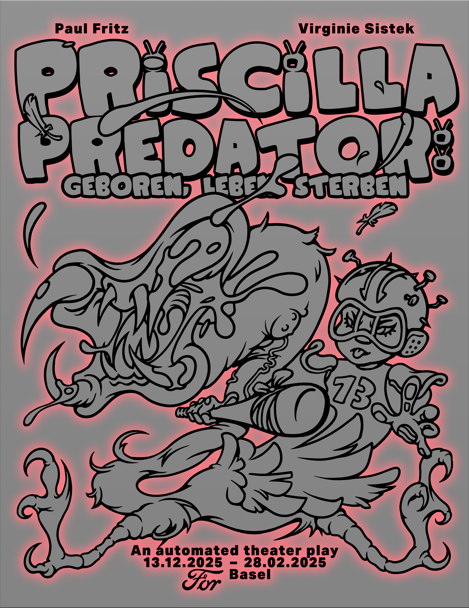

2025 Priscilla Predator; geboren, leben, sterben, FOR, Basel
Sunday is museum day. “For the first time, a museum exhibition brings into dialogue Auguste Rodin (1840–1917) and Hans Arp (1886–1966), pairing the ground-breaking work of modern sculpture’s great precursor with the influential work of a major protagonist of abstract sculpture.” Accompanied by relatives we coudn‘t choose ourselves, we walk the path between “Landscape or Woman, 1962” and “Vase, Pregnant Amphora, 1953” at the Fondation Beyeler in summer 2021. Links between “women” and “landscape,” between “women” and “containers” are made. Discomfort is the feeling that can creep up on you in such rooms. A feeling that shapes teenage years and could be an indicator of discord. But the utopian power of discomfort and the romanticized longing for another place is normalized and rendered harmless in the sense of a coming-of-age story. The need of support in searching for oneself and for meaningful coexistence, which cannot be achieved independently, seems rather to serve as a justification for setting boundaries and pointing the way ahead. Even Priscilla has to unwrap her presents. The compulsion to be grateful and to owe something in return can only come into effect when the ritual is completed, or can only be circumvented if things belong to everyone: In the scrapyard of digital culture, where things lie around that have been swallowed and excreted by AI, copied again and again, and have long since reached Baudrillard’s fourth stage. This is precisely where Brad Troemel sees utopian potential, where the “Artist Without Art” collects, ironizes, and twists common goods in order to make emotions in late-capitalist life palpable. However, the community that emerges here is not based on an anarchist idea of mutual aid. It is as well subject to the ideology of the free market, in which everyone looks after themselves and takes what is available. Nevertheless, in this junkyard of shared ideas, we at least feel liberated from Hans Arp’s approach to the female essence. Everything else can perhaps still be built here. Welcome!
Valerie Keller, Matthias Liechti
Priscilla Predator: geboren, leben, sterben is an automated theater play. The play starts every hour on the hour and lasts thirty minutes. Between each representation the deactivated set can be visited as an exhibition.



CREDITS:
Written and Directed by – Paul Fritz & Virginie SistekVoiced by – Emma Blanc-Germser, Eulalie Félix, Christine Guenther, Ludovico Orombelli, Nicolas PonceOriginial Soundtrack by – NumaTechnician – Daniel Mudrecki a.k.a. DM SolutionsSet Design – Lucas AulagnierAnimation – Paul FritzCostumes – Virginie SistekGraphic Design – Daniel DrabekProduced by – Basel KunstKredit, Ville de Lausanne, Canton de Vaud, FORThanks to – Michael P. Fritz, Elin Gonzales, Margaux Dewarrat, Camille Aleña, Paul Levante